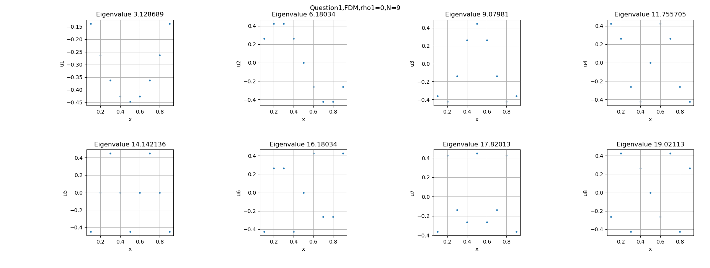
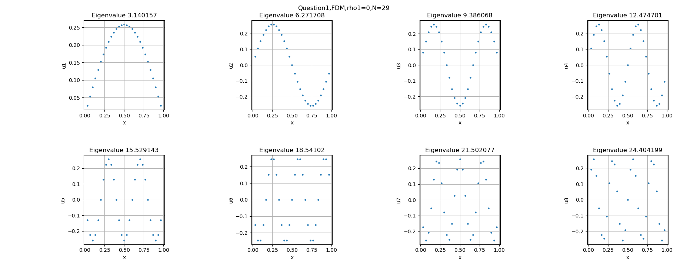
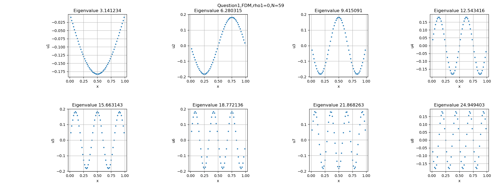
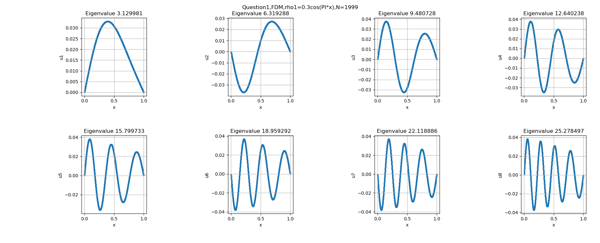
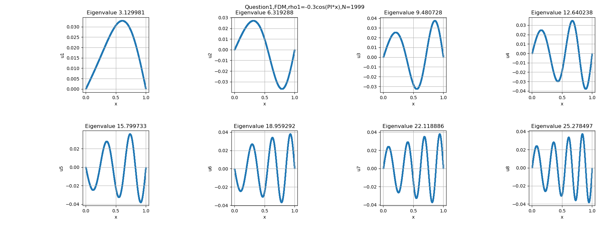
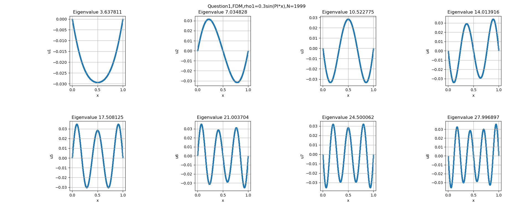

小课题 1
在一维情况下，分别用有限差分法和谱方法讨论情况下的本征值和本征向量并进行比较。
为了方便起见，我们令a = 0, b = 1，即length = 1。
结果与讨论
a. 有限差分法()
为了增加数值稳定性，我们将分别作用在矩阵元和特征值上面：
A[0] = 2*m_f(dx)/dx;
A[1] = -1*m_f(dx)/dx;
A[N*N-1] = 2*m_f(N*dx)/dx;
A[N*N-2] = -1*m_f(N*dx)/dx;
for(int i=1; i<N-1; i++){
A[i*N+i] = 2*m_f((i+1)*dx)/dx;
A[i*N+i-1] = -A[i*N+i]/2;
A[i*N+i+1] = -A[i*N+i]/2;
}
......
fprintf(eigenvalue, "%lf\n", sqrt(lambda[i]/(dx)));
也就是说：
| eigenvalue\N | 9 | 29 | 59 | 99 | 299 | 599 | 999 | 1999 |
|---|---|---|---|---|---|---|---|---|
| 1 | 3.128689 | 3.140157 | 3.141234 | 3.141463 | 3.141578 | 3.141589 | 3.141591 | 3.141592 |
| 2 | 6.180340 | 6.271708 | 6.280315 | 6.282152 | 6.283070 | 6.283157 | 6.283175 | 6.283183 |
| 3 | 9.079810 | 9.386068 | 9.415091 | 9.421290 | 9.424390 | 9.424681 | 9.424743 | 9.424769 |
| 4 | 11.755705 | 12.474701 | 12.543416 | 12.558104 | 12.565452 | 12.566141 | 12.566288 | 12.566350 |
| 5 | 14.142136 | 15.529143 | 15.663143 | 15.691819 | 15.706169 | 15.707515 | 15.707802 | 15.707923 |
| 6 | 16.180340 | 18.541020 | 18.772136 | 18.821663 | 18.846455 | 18.848781 | 18.849277 | 18.849486 |
| 7 | 17.820130 | 21.502077 | 21.868263 | 21.946862 | 21.986225 | 21.989918 | 21.990705 | 21.991038 |
| 8 | 19.021130 | 24.404199 | 24.949403 | 25.066647 | 25.125392 | 25.130904 | 25.132080 | 25.132576 |
通过改变格点N的大小，可以给出该方法的收敛速度，如上表；对于基态其收敛速度还是比较慢的，后面的态就更不用说了。如果用直接对角化的方式，计算机的极限应该也就是一万左右，应该可以精确到小数点后7、8位这样。
下面给几个图，空间有限剩下的可以在该目录下/pic看到。




b. 有限差分法()
由于非线性Laplace方程的有限元矩阵形式不是对角的，因此我们不能使用LAPACKE_dsyev进行对角化，只能用LAPACKE_dgeev来对角化，特征值也是混乱排序的，因此需要我们来排序。
为了得到一些规律，我们还算了的情况，和我们能从理论上得到的一样，对于cos函数，由于其在区间上不具有轴对称性，因此其对特征向量的影响是轴对称的，对特征值的影响相同；与此相反，sin函数对特征值的影响是轴对称的，同时对特征向量的影响也不太相同。
下面给出cos函数作为非线性项的特征值和特征向量。由于正负不影响特征值，因此我们只给出一组。
| eigenvalue\N | 9 | 29 | 59 | 99 | 299 | 599 | 999 | 1999 |
|---|---|---|---|---|---|---|---|---|
| 1 | 3.116741 | 3.128509 | 3.129613 | 3.129849 | 3.129967 | 3.129978 | 3.129980 | 3.129981 |
| 2 | 6.212084 | 6.307349 | 6.316305 | 6.318216 | 6.319171 | 6.319261 | 6.319280 | 6.319288 |
| 3 | 9.120041 | 9.440439 | 9.470657 | 9.477108 | 9.480334 | 9.480637 | 9.480701 | 9.480728 |
| 4 | 11.788711 | 12.544789 | 12.616368 | 12.631656 | 12.639303 | 12.640020 | 12.640173 | 12.640238 |
| 5 | 14.142136 | 15.613447 | 15.753119 | 15.782973 | 15.797908 | 15.799308 | 15.799607 | 15.799733 |
| 6 | 16.094036 | 18.637678 | 18.878761 | 18.930333 | 18.956138 | 18.958557 | 18.959074 | 18.959292 |
| 7 | 17.618985 | 21.608708 | 21.991042 | 22.072905 | 22.113878 | 22.117721 | 22.118540 | 22.118886 |
| 8 | 19.253639 | 24.517839 | 25.087722 | 25.209868 | 25.271021 | 25.276757 | 25.277981 | 25.278497 |
：

：

下面给出sin函数作为非线性项的特征值和特征向量。
：
| eigenvalue\N | 9 | 29 | 59 | 99 | 299 | 599 | 999 | 1999 |
|---|---|---|---|---|---|---|---|---|
| 1 | 2.792852 | 2.803143 | 2.804106 | 2.804312 | 2.804414 | 2.804424 | 2.804426 | 2.804427 |
| 2 | 5.630320 | 5.714135 | 5.722005 | 5.723684 | 5.724524 | 5.724603 | 5.724619 | 5.724627 |
| 3 | 8.300479 | 8.582815 | 8.609472 | 8.615163 | 8.618010 | 8.618276 | 8.618333 | 8.618357 |
| 4 | 10.756756 | 11.421203 | 11.484415 | 11.497922 | 11.504678 | 11.505312 | 11.505447 | 11.505504 |
| 5 | 12.941011 | 14.225515 | 14.348884 | 14.375272 | 14.388476 | 14.389714 | 14.389978 | 14.390089 |
| 6 | 14.797137 | 16.989327 | 17.202209 | 17.247804 | 17.270625 | 17.272766 | 17.273222 | 17.273415 |
| 7 | 16.264939 | 19.705556 | 20.042974 | 20.115352 | 20.151593 | 20.154993 | 20.155718 | 20.156024 |
| 8 | 17.413524 | 22.366964 | 22.869489 | 22.977473 | 23.031568 | 23.036643 | 23.037726 | 23.038183 |
：
| eigenvalue\N | 9 | 29 | 59 | 99 | 299 | 599 | 999 | 1999 |
|---|---|---|---|---|---|---|---|---|
| 1 | 3.622867 | 3.636142 | 3.637394 | 3.637661 | 3.637795 | 3.637808 | 3.637810 | 3.637811 |
| 2 | 6.919410 | 7.021892 | 7.031594 | 7.033666 | 7.034702 | 7.034799 | 7.034820 | 7.034828 |
| 3 | 10.136179 | 10.479211 | 10.511878 | 10.518858 | 10.522349 | 10.522676 | 10.522746 | 10.522775 |
| 4 | 13.105994 | 13.910814 | 13.988109 | 14.004637 | 14.012906 | 14.013681 | 14.013846 | 14.013916 |
| 5 | 15.755801 | 17.307041 | 17.457751 | 17.490009 | 17.506152 | 17.507665 | 17.507988 | 17.508125 |
| 6 | 18.025863 | 20.656758 | 20.916702 | 20.972409 | 21.000295 | 21.002910 | 21.003468 | 21.003704 |
| 7 | 19.905438 | 23.950053 | 24.361976 | 24.450379 | 24.494649 | 24.498802 | 24.499688 | 24.500062 |
| 8 | 21.508557 | 27.177432 | 27.790883 | 27.922752 | 27.988818 | 27.995017 | 27.996339 | 27.996897 |
：

：

c. 谱方法()
对于谱方法，一维固定边界条件下Laplace方程的解是正弦函数，我们可以直接给出积分的通式：
我们将使用上面的表达式、Romberg积分分别计算；并以此为依据来判断Romberg积分方法的数值稳定性。注意，从上面的式子我们还可以观察出来——时谱方法的矩阵形式一定是对角的，这样我们就可以方便地使用LAPACKE_dsyev函数来进行对角化了。另外由于romberg积分的不稳定性以及时间复杂度，我们会减少点的个数。
| eigenvalue\N | 9 | 29 | 59 | 99 | 299 |
|---|---|---|---|---|---|
| 1 | 3.141593 | 3.141593 | 3.141593 | 3.141593 | 3.141593 |
| 2 | 6.283185 | 6.283185 | 6.283185 | 6.283185 | 6.283185 |
| 3 | 9.424778 | 9.424778 | 9.424778 | 9.424778 | 9.424778 |
| 4 | 12.566371 | 12.566371 | 12.566371 | 12.566371 | 12.566371 |
| 5 | 15.707963 | 15.707963 | 15.707963 | 15.707963 | 15.707963 |
| 6 | 18.849556 | 18.849556 | 18.849556 | 18.849556 | 18.849556 |
| 7 | 21.991149 | 21.991149 | 21.991149 | 21.991149 | 21.991149 |
| 8 | 25.132741 | 25.132741 | 25.132741 | 25.132741 | 25.132741 |


d. 谱方法()
需要注意的是上面的结果说明矩阵不是对称的，不能是使用LAPACKE_dsyev来对角化。 另外由于romberg积分的不稳定性以及时间复杂度，我们会减少点的个数。
| eigenvalue\N | 9 | 29 | 59 | 99 | 299 |
|---|---|---|---|---|---|
| 1 | 3.011534 | 3.003449 | 3.002611 | 3.002427 | 3.002333 |
| 2 | 5.753933 | 5.666533 | 5.658036 | 5.656199 | 5.655273 |
| 3 | 8.380866 | 8.129817 | 8.099802 | 8.092860 | 8.089231 |
| 4 | 11.317230 | 10.599504 | 10.517187 | 10.498008 | 10.487922 |
| 5 | 14.210133 | 13.087753 | 12.932862 | 12.893849 | 12.872325 |
| 6 | 17.942712 | 15.652621 | 15.365144 | 15.291548 | 15.250223 |
| 7 | 21.136939 | 18.228709 | 17.809262 | 17.693631 | 17.625083 |
| 8 | 26.480638 | 20.935607 | 20.288576 | 20.108438 | 19.999166 |

从上面的对比中我们可以看出，两种方法给出的解果还是有比较大的区别的，但是大体的形式都是一样的，不一样的是具体的值。